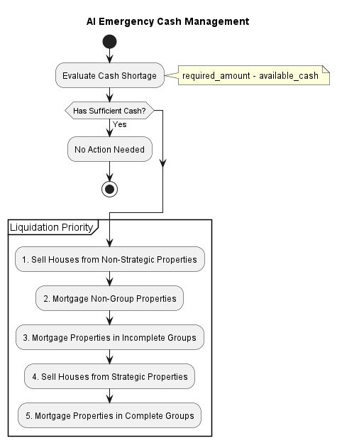
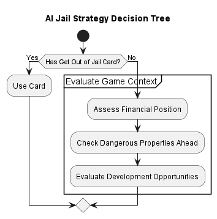
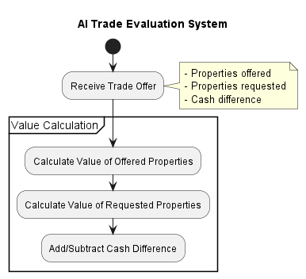

AI Behavior Analysis
This document provides a detailed analysis of AI player behavior in different game scenarios, explaining the decision-making processes and strategies employed by both Easy and Hard AI players.
AI Decision Patterns
AI players follow different decision-making patterns based on their difficulty level and game situation:
![@startuml
title AI Decision Pattern Analysis
start
:Game Context Evaluation;
note right
AI analyzes:
- Current board state
- Player positions
- Property ownership distribution
- Available cash
end note
:Strategic Goal Selection;
note right
Prioritizes:
1. Survival (avoid bankruptcy)
2. Complete color groups
3. Build developments
4. Block opponents
end note
if (AI Type?) then (Easy AI)
:Apply Simple Heuristics;
:Use Fixed Thresholds;
else (Hard AI)
:Apply Complex Heuristics;
:Use Dynamic Thresholds;
:Apply Emotional Adjustments;
endif
:Execute Decision;
stop
@enduml](../_images/plantuml-5d83dbcece394e1c010affb7ab6b60ddbaab2e90.png)
AI Auction Behavior
The AI bidding strategy in auctions differs significantly between Easy and Hard difficulty levels:
- if (Current Bid > Max Bid?) then (Yes)
:Pass;
- else (No)
:Place Bid; note right
bid = current_bid + min(50, max(10, headroom * 0.2))
end note
endif
- else (Hard AI)
:Apply Emotional Multiplier; note right
multiplier = 1.0 + (mood_modifier * 1.5) affected_bid = base_bid * multiplier
end note
- if (AI is Angry?) then (Yes)
:May Bid Aggressively; note right
Even if base valuation suggests passing
end note
- else if (AI is Happy?) then (Yes)
:May Be Conservative; note right
Might pass even on valuable properties
end note
endif
- if (Current Bid > Adjusted Max?) then (Yes)
:Pass;
- else (No)
:Place Emotionally Adjusted Bid;
endif
endif
stop
@enduml
AI Development Strategy
Property development decision-making follows a specific process based on available resources and group ownership:

- if (AI Type?) then (Easy AI)
- if (ROI > Fixed Threshold?) then (Yes)
:Approve Development;
- else (No)
:Skip Development;
endif
- else (Hard AI)
:Apply Emotional Factor; note right
Development threshold adjusted by mood: * Angry: Lower threshold (more development) * Happy: Higher threshold (less development)
end note
- if (Adjusted ROI > Dynamic Threshold?) then (Yes)
:Approve Development;
- else (No)
- if (Random < Emotion-based Chance?) then (Yes)
:Approve Development Anyway; note right
More likely if angry
end note
- else (No)
:Skip Development;
endif
endif
endif
stop
@enduml
AI Emergency Cash Management
When facing financial difficulties, AI players employ different strategies to raise funds:

- if (AI Type?) then (Easy AI)
:Apply Fixed Liquidation Order;
- else (Hard AI)
:Evaluate Strategic Value of Each Asset; note right
Considers: - Immediate cash gain - Long-term revenue loss - Strategic position impact
end note
:Apply Emotional Risk Assessment; note right
Angry: May keep high-risk properties
Happy: More willing to sacrifice properties
end note
endif
- if (Can Raise Required Amount?) then (Yes)
:Execute Liquidation Plan;
- else (No)
:Prepare for Bankruptcy;
endif
stop
@enduml
AI Jail Strategy
AI decision-making for jail scenarios depends on several factors including financial situation and game state:

- if (AI Type?) then (Easy AI)
- if (Money > 250?) then (Yes)
:Pay Fine;
- else (No)
:Roll for Doubles;
endif
- else (Hard AI)
:Apply Emotional Context;
- if (AI is Angry?) then (Yes)
- if (Random < Adjusted Probability?) then (Yes)
:Pay Fine Impulsively; note right
Even if financially risky
end note
endif
endif
- if (Board Analysis?) then (Dangerous Properties Ahead)
:Roll for Doubles; note right
Try to stay in jail to avoid expensive properties
end note
- else (Safe or Opportunities Ahead)
- if (Money > 200?) then (Yes)
:Pay Fine;
- else (No)
:Roll for Doubles;
endif
endif
endif
endif
stop
@enduml
AI Trade Evaluation System
The AI uses a complex system to evaluate trade offers from other players:

:Apply Strategic Multipliers; note right
Complete color group: 1.5x
Almost complete group: 1.3x
Station/utility synergy: 1.2x
end note
- if (AI Type?) then (Easy AI)
- if (Value Difference > 0?) then (Yes)
- if (Random < 0.8) then (Yes)
:Accept Trade;
- else (No)
:Reject Trade; note right
Adds unpredictability
end note
endif
- else (No)
:Reject Trade;
endif
- else (Hard AI)
:Apply Emotional Assessment; note right
Angry: May reject profitable trades
Happy: May accept marginally unprofitable trades
end note
- if (Adjusted Value Difference > 0?) then (Yes)
:Accept Trade;
- else (No)
- if (Almost Balanced & Happy?) then (Yes)
- if (Random < Adjusted Probability) then (Yes)
:Accept Slightly Unfavorable Trade;
- else (No)
:Reject Trade;
endif
- else (No)
:Reject Trade;
endif
endif
endif
stop
@enduml
Hard AI Mood Impact Analysis
This diagram provides a detailed analysis of how the Hard AI’s mood impacts various game decisions:
![@startuml
title Hard AI Mood Impact on Decision Making
skinparam linetype ortho
rectangle "Mood Range" {
rectangle "Happy\n(-0.3)" as Happy
rectangle "Slightly Happy\n(-0.15)" as SlightlyHappy
rectangle "Neutral\n(0.0)" as Neutral
rectangle "Slightly Angry\n(+0.15)" as SlightlyAngry
rectangle "Angry\n(+0.3)" as Angry
Happy -[hidden]right- SlightlyHappy
SlightlyHappy -[hidden]right- Neutral
Neutral -[hidden]right- SlightlyAngry
SlightlyAngry -[hidden]right- Angry](../_images/plantuml-eaa7f8a1ca21370ec7d912400580c5d4ba94540e.png)
- rectangle “Decision Adjustments” {
- rectangle “Property Valuation” as PropVal {
text “Happy: -30% ValuenAngry: +30% Value”
- rectangle “Auction Bidding” as Auction {
text “Happy: -30% Bid CeilingnAngry: +30% Bid Ceiling”
- rectangle “Development” as Dev {
text “Happy: +30% ROI ThresholdnAngry: -30% ROI Threshold”
- rectangle “Risk Tolerance” as Risk {
text “Happy: -30% Risk TakingnAngry: +30% Risk Taking”
- rectangle “Trade Evaluation” as Trade {
text “Happy: +15% Trade AcceptancenAngry: -15% Trade Acceptance”
PropVal -[hidden]down- Auction Auction -[hidden]down- Dev Dev -[hidden]down- Risk Risk -[hidden]down- Trade
- rectangle “Behavioral Outcomes” {
- rectangle “Conservative Play” as Conservative {
text “- Lower bidsn- Fewer developmentsn- More predictable”
- rectangle “Balanced Play” as Balanced {
text “- Rational decisionsn- Optimal strategyn- Predictable”
- rectangle “Aggressive Play” as Aggressive {
text “- Higher bidsn- More developmentsn- Less predictable”
Conservative -[hidden]down- Balanced Balanced -[hidden]down- Aggressive
Happy –> PropVal Happy –> Auction Happy –> Dev Happy –> Risk Happy –> Trade
Angry –> PropVal Angry –> Auction Angry –> Dev Angry –> Risk Angry –> Trade
Happy –> Conservative Neutral –> Balanced Angry –> Aggressive
@enduml